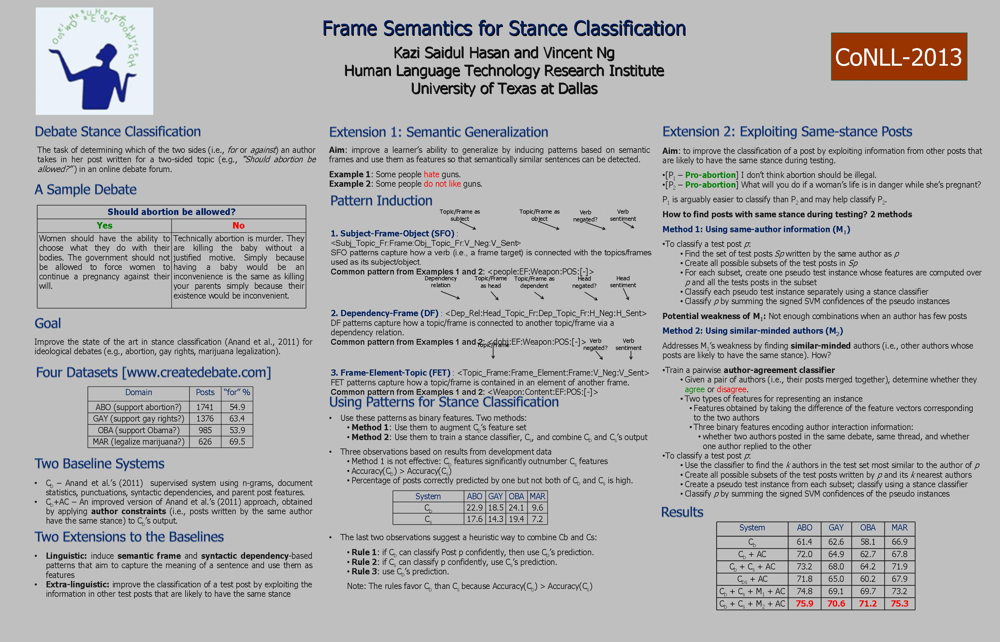

Frame Semantics for Stance Classification
Kazi Saidul Hasan and Vincent Ng.
Proceedings of the Seventeenth Conference on Computational Natural Language Learning (CoNLL), pp. 124-132, 2013.
Click here for the Postscript and PDF version.
The talk slides are available here.
Abstract
Determining the stance expressed by an author from a post written for a two-sided debate in an online debate forum is arelatively new problem in opinion mining. We extend a state-of-the-art learningbased approach to debate stance classification by (1) inducing lexico-syntactic patterns based on syntactic dependencies and semantic frames that aim to capture the meaning of a sentence and provide a generalized representation of it; and (2) improving the classification of a test post via a novel way of exploiting the information in other test posts with the same stance. Empirical results on four datasets demonstrate the effectiveness of our extensions
Dataset
The dataset used in this paper is available from
this page.
BibTeX entry
@InProceedings{Hasan+Ng:13b,
author = {Hasa, Kazi Saidul and Vincent Ng},
title = {Frame Semantics for Stance Classification},
booktitle = {Proceedings of the Seventeenth Conference on Computational Natural Language Learning},
pages = {124--132},
year = 2013
}
